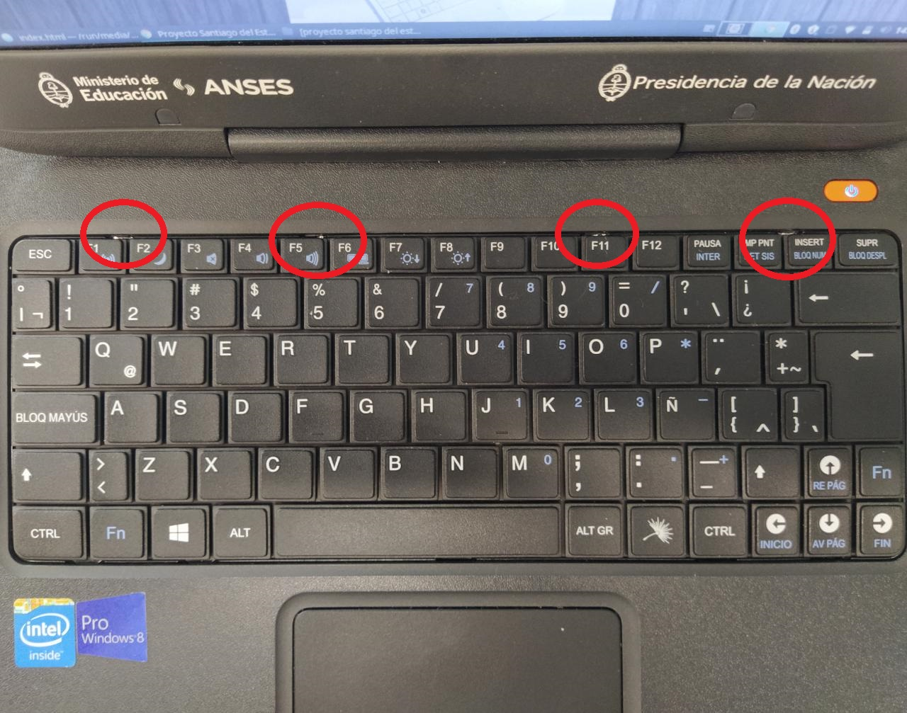
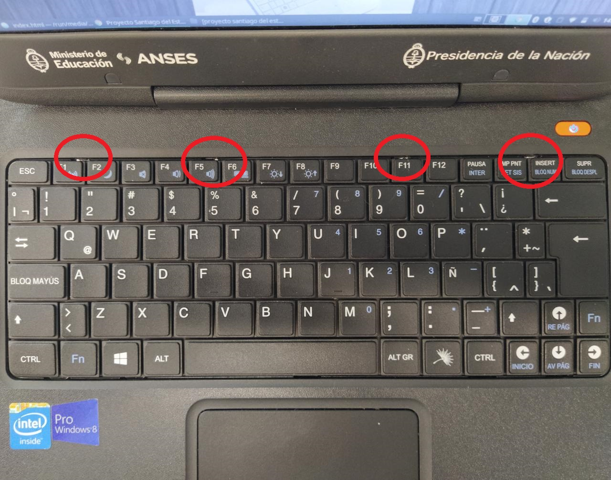

Proyecto Santiago del Estero
¡El siguiente metodo sirve nada mas para el modelo G6!
Desarmado de la notebook
1-Abrimos la notebook
 2-Los circulos rojos marcan 4 trabas que hay dentro del teclado. Tendremos que hacer palanca (recomendable un objeto finito y plano como por ejemplo un destornillador plano)tirando las trabas hacia atras para sacar el teclado, empezaremos
con la primera traba a la izquierda. Con otro objeto finito cuando el teclado se este retirando hacia arriba lo pondremos debajo de este para facilitar la tarea

3-Empujaremos hacia adelante las dos trabitas que indican las flechas con el fin de retirar el teclado
2-Los circulos rojos marcan 4 trabas que hay dentro del teclado. Tendremos que hacer palanca (recomendable un objeto finito y plano como por ejemplo un destornillador plano)tirando las trabas hacia atras para sacar el teclado, empezaremos
con la primera traba a la izquierda. Con otro objeto finito cuando el teclado se este retirando hacia arriba lo pondremos debajo de este para facilitar la tarea

3-Empujaremos hacia adelante las dos trabitas que indican las flechas con el fin de retirar el teclado
 4-Ya retirado el teclado, destornillaremos los tornillos marcados por las flechas
4-Ya retirado el teclado, destornillaremos los tornillos marcados por las flechas
 5-Ya retirados los tornillos iremos a la parte trasera y destornillaremos los tornillos que indican las flechas
5-Ya retirados los tornillos iremos a la parte trasera y destornillaremos los tornillos que indican las flechas
 6-Con un objeto largo y finito haremos palanca en la zona marcada por la flecha, despues haremos palanca por tada la tapa con el fin deretirarla de la notebook
6-Con un objeto largo y finito haremos palanca en la zona marcada por la flecha, despues haremos palanca por tada la tapa con el fin deretirarla de la notebook
 7-Ya retirada la tapa destornillaremos los tornillos marcados por las flechas
7-Ya retirada la tapa destornillaremos los tornillos marcados por las flechas
 8-Ya retirados los tornillos empujaremos hacia adelante el conector de la bateria de la forma que marcan las flechitas para ya retirar la bateria
8-Ya retirados los tornillos empujaremos hacia adelante el conector de la bateria de la forma que marcan las flechitas para ya retirar la bateria
 9-Despues de haber retirado la bateria, retiraremos el disipador destornillando los tornillos indicados por las flechas
9-Despues de haber retirado la bateria, retiraremos el disipador destornillando los tornillos indicados por las flechas

Programacion del firmware para el desbloqueo
El programador CH341A es el que vamos a usar. Aca les dejamos un link https://articulo.mercadolibre.com.ar/MLA-655040718-programador-usb-ch341a-pinza-soic8-cable-eeprom-24-25-_JM?quantity=1#position=6&type=item&tracking_id=aaf1bcff-6005-4117-af8c-484d7e2f811f
1-Ahora, enchufaremos el conector del cable en el puerto de la plaqueta tal como se muestra en la foto. Para que el cable se afirme a la plaqueta,empujaremos la palanquita como muestra la flechita. Luego de haber hecho esto, conectaremos el usb al puerto usb de otra notebook
 2-Cuando ya tengamos el programador armado, lo enchufaremos en el lugar donde esta marcado por un circulo rojo, de la manera que se muestra en la foto.¡El cable rojo mirando al lado derecho!
2-Cuando ya tengamos el programador armado, lo enchufaremos en el lugar donde esta marcado por un circulo rojo, de la manera que se muestra en la foto.¡El cable rojo mirando al lado derecho!
 3-Como indica en la foto le daremos click en el boton "Detectar". Luego de darle click nos saldra todos los datos que estan en la imagen a la derecha. En el caso que nos salga "ORDER" en la parte donde indica la flecha verde tendremos que desconectar y volver a conectar como se indica en el anterior paso
3-Como indica en la foto le daremos click en el boton "Detectar". Luego de darle click nos saldra todos los datos que estan en la imagen a la derecha. En el caso que nos salga "ORDER" en la parte donde indica la flecha verde tendremos que desconectar y volver a conectar como se indica en el anterior paso
 4-Le daremos nuevamente click al boton donde dice "Detectar" y luego al boton donde dice "leer", marcado por un circulo rojo
4-Le daremos nuevamente click al boton donde dice "Detectar" y luego al boton donde dice "leer", marcado por un circulo rojo
 5-Daremos al boton que dice "Guardar" en la parte superior izquierda de la pantalla. Lo guardaremos en el escritorio con el nombre que nosotros queramos. Aca estariamos haciendo un backup por si hubiera algun problema.
5-Daremos al boton que dice "Guardar" en la parte superior izquierda de la pantalla. Lo guardaremos en el escritorio con el nombre que nosotros queramos. Aca estariamos haciendo un backup por si hubiera algun problema.

6-Le daremos click al boton "Borrar" marcado por un circulo rojo. Luego le daremos click al boton "leer" , marcado por un circulo verde, y chequearemos que este todo en blanco. Esperaremos hasta que se complete la barra marcada por la flecha

7-(Link de los archivos: http://ceesty.com/wMG6ky )Le daremos clik al boton "abrir" en la parte superior izquierda de la pantalla y abriremos la carpeta "Bins para desbloqueo de notebooks del gobierno", luego le daremos click a la carpeta marcada por una flecha naranja y despues a la carpeta marcada por la flecha verde. Al entrar en la ultima carpeta le daremos click al unico archico que esta dentro y pondremos aceptar. Luego le daremos click al boton donde dice "programar" y esperaremos hasta que nos salga el cartelito de la ultimo foto

Montado de la netbook
Como desarmamos la notebook la volvemos a armar